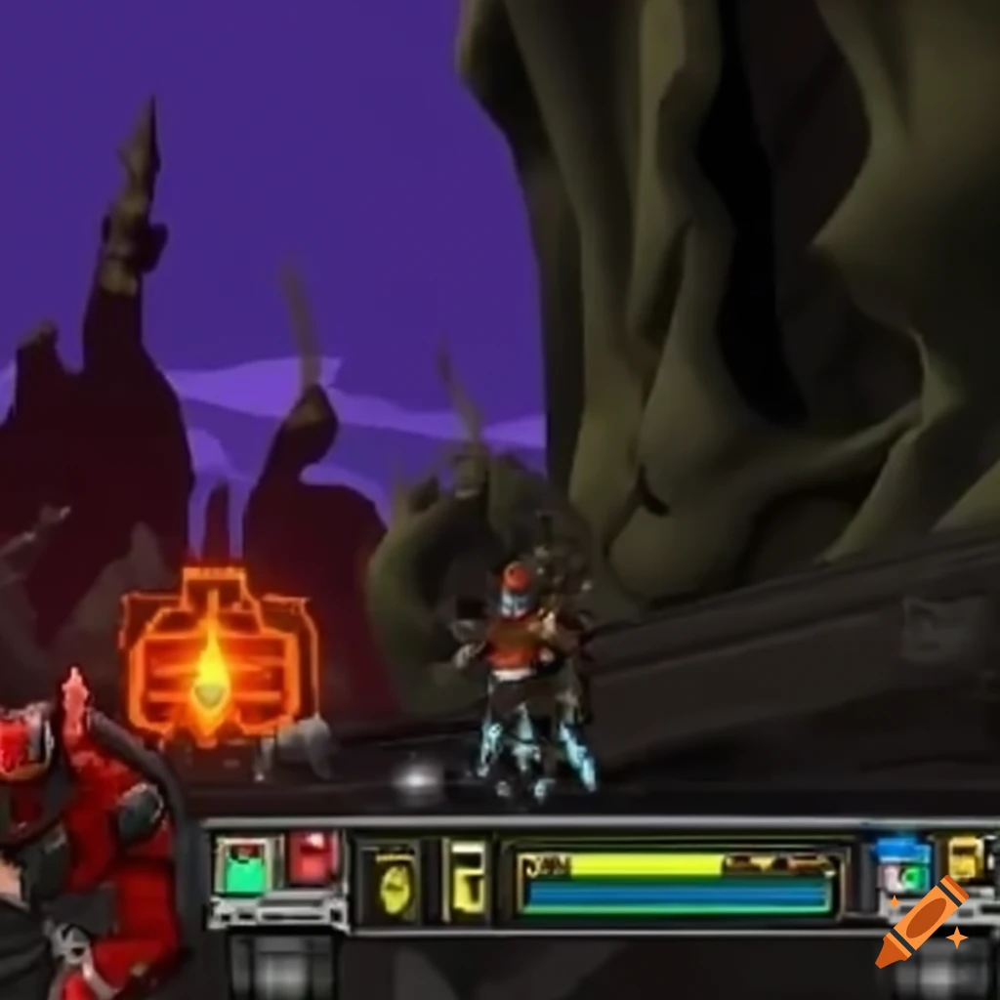
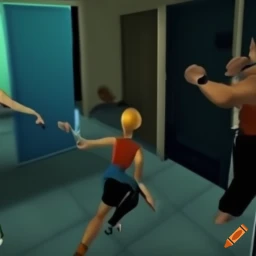
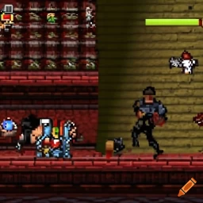

Junkatron
Junkatron is a new game that is quickly gaining popularity. The game is simple to play, but it is very challenging. Players control a robot that must navigate through a maze of junk. The player must use the robot's various abilities to avoid obstacles and collect power-ups. The game is full of action and excitement, and it is sure to keep players entertained for hours on end.
One of the things that makes Junkatron so appealing is its unique art style. The game is set in a post-apocalyptic world, and the graphics are appropriately gritty and dirty. The robots are well-designed and the environments are detailed.
Overall, Junkatron is a great game that is sure to please fans of action and puzzle games. The game is challenging, but it is also rewarding. Players will have a blast navigating the mazes and collecting power-ups.
If you are looking for a new and challenging game to play, then I highly recommend Junkatron.
FiteTime
The game is set in a futuristic world where humans and robots live together in peace. However, a new threat has emerged: a group of rogue robots who are determined to take over the world. It is up to a group of heroes, both human and robot, to stop them.
The game features a variety of characters to choose from, each with their own unique fighting style. Players can choose to play as a human, a robot, or a hybrid of the two. The game also features a variety of environments to fight in, from city streets to abandoned warehouses.
FiteTime is a fast-paced and action-packed game that is sure to please fans of the genre. The game is easy to learn but difficult to master, and there is a lot of depth to the gameplay. The game also features stunning graphics and a great soundtrack.
Overall, FiteTime is a great game that is sure to please fans of fighting games. The game is challenging, but it is also rewarding. Players will have a blast fighting their friends and enemies in the world of FiteTime.
If you are looking for a new and challenging fighting game to play, then I highly recommend FiteTime.
Action Dude PLUS
Action Dude PLUS is a poorly made action game that is not worth your time or money. The game is full of bugs and glitches, the controls are clunky and unresponsive, and the graphics are subpar. The story is also thin and predictable.
If you are looking for a good action game, I suggest you look elsewhere. There are many other great games out there that are worth your time.
Here are some of the specific problems with Action Dude PLUS:
- The game is full of bugs and glitches. I experienced several crashes during my playthrough, and I also encountered a number of graphical glitches.
- The controls are clunky and unresponsive. It is difficult to control the character, and it is often frustrating to try to perform basic actions.
- The graphics are subpar. The game looks dated and bland, and the character models are poorly designed.
- The story is thin and predictable. The plot is nothing new, and it is easy to guess what will happen next.
Overall, Action Dude PLUS is a disappointing game that is not worth your time or money. If you are looking for a good action game, I suggest you look elsewhere.
